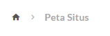
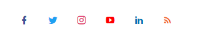

AKSES CEPAT
COVID-19
E-LEARNING
MOOC
INFORMASI PUBLIK
PETA SITUS
ID
ENDOWMENT FUND
Tentang unpad
Penelitian dan Inovasi
Pendidikan
Mahasiswa
Alumni
Penerimaan

Peta Situs
Agenda Mendatang
Akreditas
Aliansi Strategis Universitas Padjajaran-Jawa Barat (ASUP JABAR)
Anugerah Motoker Unpad
Arsip Agenda
Arsip Berita Fakultas
Arsip Ilegal
Agenda Kegiatan Unpad
Indikator Kinerja Kunci (IKK)
Memorandum
Panduan
Peraturan
Naskah Akademik
Peraturan Rektor Nomor 10 Tahun 2015 tentang Pedoman Pengembangan Usaha BLU Unpad
Peraturan Rektor Nomor 11 Tahun 2014 tentang Perubahan SK Rektor Nomor 448/H6/1/KEP/HK/2009 tentang Integrasi Pengelolaan Pendidikan Pascasarjana dari Program Pascasarjana ke Fakultas di Lingkungan Unpad
Peraturan Rektor Nomor 11 Tahun 2015 tentang Kalender Kegiatan Akademik Unpad Tahun Akademik 2015/2016
Peraturan Rektor Nomor 12 Tahun 2015 tentang Pedoman Teknis Pengaturan Kinerja dan kebijakan Remunerasi Koordinator Program Studi dan Kepada Departemen di Lingkungan Unpad
Peraturan Rektor Nomor 13 Tahun 2015 tentang Perubahan Penulisan Cover Disertai Unpad Mulai Tahun Akademik 2014/2015
Peraturan Rektor Nomor 14 Tahun 2015 tentang Pedoman Penyusutan Arsip pada Unit Kerja Unpad
Peraturan Rektor Nomor 45 Tahun 2014 tentang Pejabat Penilai dan Atasan Pejabat Penilai Prestasi Kerja dan Kinerja PNS di Lingkungan Unpad
Peraturan Rektor Nomor 47 Tahun 2014 tentang Pedoman Toga Wisudawan di Lingkungan Unpad
Peraturan ektor Nomor 7 Tahun 2015 tentang Jadwal Retensi Arsip (JRA) Fasilitatif Non Keuangan dan Kepegawaian di Lingkungan Unpad
Peraturan Rektor Nomor 8 Tahun2015 tentang Jadwal Retensi (JRA) Fasilitatif Keuangan di Lingkungan Unpad
Peraturan Rektor Nomor 9 Tahun 2015 tentang jadwal Retensi Arsip (JRA)
Pidato Rektor
Rencana Strategis Unpad
Rencana Umum Pengadaan Unpad
SOP/Prosedur Operasional Buku
Surat Keputusan
Arsip Surat Keputusan
University’s Last Governance Meeting Minutes
BPJS
Budaya Unpad
Cari
Data Barang Milik Negara
Dies ke-57 Universitas Padjajaran
Dies Natalis ke-59 Universitas Padjajaran
Jadwal
Dies Fakultas Kedokteran Gigi Unpad
Logo Dies ke-59 Unpad
Olimpiade Olah Raga Tradisional
Dies Natalis ke-60 Universitas Padjajaran
Information Book Dies Natalis ke-60 Universitas Padjadjaran
Kalender Kegiatan Dies Natalis ke-60 Universitas Padjadjaran
Workshop Masa Depan Provinsi Kepulauan
Doktor
e-Brosur Jenjang Dokter
e-Brosur Jenjang Magister
e-Brosur Jenjang Profesi dan Spesialis
Fakultas
GENTRA
Setahun Pandemi
Gentra Edisi II 2021 Hybrid University
Glossary (English)
Goverment Public Relation
Herregistrasi
Hi, Unpad!
Infografis Awareness Covid-19
Informasi Beasiswa
Informasi Penerimaan Mahasiswa Baru Unpad 2015
Informasi Publik
daftar Informasi Publik
pengadaan 2016
Ringkasan Permohonan dan Keberatan Informasi Publik
SAQ Unpad
Tata Cara Permohonan Informasi Publik
Informasi Registasi Mahasiswa Baru
Informasi UTBK
Inspirasi
Belajar dari Tukang Service Jam
Saringan Air
International Student
Jelajahi Jawa Barat
Kampus Jatinangor
Kampus Pangandaran
Kampus Unpad
Kampus Unpad Arjasari
Kantor Komunikasi Publik Universitas Padjajaran
Ayo Kenal Unpad
e-Brosur Pascasarjana
Kanal Media Unpad (KaMU
Karya Ilmiah
Buku
Unpad Press
Penerimaan Mahasiswa Baru Unpad
PMB Fakultas Hukum Unpad 2013
PMB Fakultas Ilmu Keperawatan Unpad 2013
PMB FEB Unpad 2013
PMB FISIP Unpad 2013
PMB FKG Unpad 2013
PMB FMIPA Unpad 2013
PMB FPIK Unpad 2013
PMB FTIP Unpad 2013
Pengembangan Pembelajaran Transformatif Unpad
Penolakan
Prosesi Penerimaan Mahasiswa Baru 2014
Pusat Unggulan Kawasan Sains dan Teknologi
Pusat Unggulan Pengembangan Iptek Terapan (PUSPITEp) Kampus Arjasari
radio
Register
Rekurtmen tenaga TI
Rektor Menyapa
Search By Google
Surat Edaran Rektor
Surat Edaran Rektor : Covid-19
SURAT TUGAS
Tanya Unpad
Try Out Online Super Motivasi Unpad/a>
TV
Twibbon
Universitas
Data dan Fakta
Unpad Dalam Angka 2020
Unpad Dalam Angka 2018
Unpad Dalam Angka 2019
Fasilitas
Elearning
Hak Kekayaan Intelektual
Kesehatan
Laboratorium central
Pusat Pelayanan Basic Science
Pemodokan
Asrama Padjajaran 1
Asrama Padjajaran 2
Asrama Padjajaran 3
Asrama Padjajaran 4
Asrama Padjajaran 5
Asrama Ex Pedca
Bale Padjajaran
Wisma Upad
Unpad Dalam Angka 2017
Unpad Merespons
User
Wisudamei2016
Keuangan
2015
2016
Kampus Jatinangor
Kampus Dipatiukur
Kampus Pangandaran
Kontak
